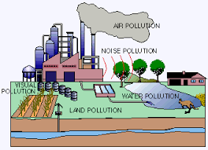
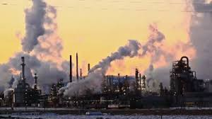
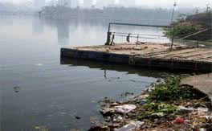

•Air Pollution is defined as the presence of substances in the atmosphere that have a harmful effect on human health as well as on the health of other living organisms. Air pollution also has a detrimental effect on the climate of the planet, often exacerbating natural calamities such as drought and flood.
•Water Pollution is defined as the contamination of bodies of water usually as a result of human activities. Affected water bodies can include lakes, rivers, and oceans as well as groundwater and aquifers. It can negatively impact aquatic ecosystems, which can then impact humans and other organisms that rely on the water body.
Water pollution is the contamination of water sources by substances which make the water unusable for drinking, cooking, cleaning, swimming, and other activities. Pollutants include chemicals, trash, bacteria, and parasites. All forms of pollution eventually make their way to water.
Air pollution is a mixture of solid particles and gases in the air. Car emissions, chemicals from factories, dust, pollen and mold spores may be suspended as particles. Ozone, a gas, is a major part of air pollution in cities. When ozone forms air pollution, it's also called smog.
